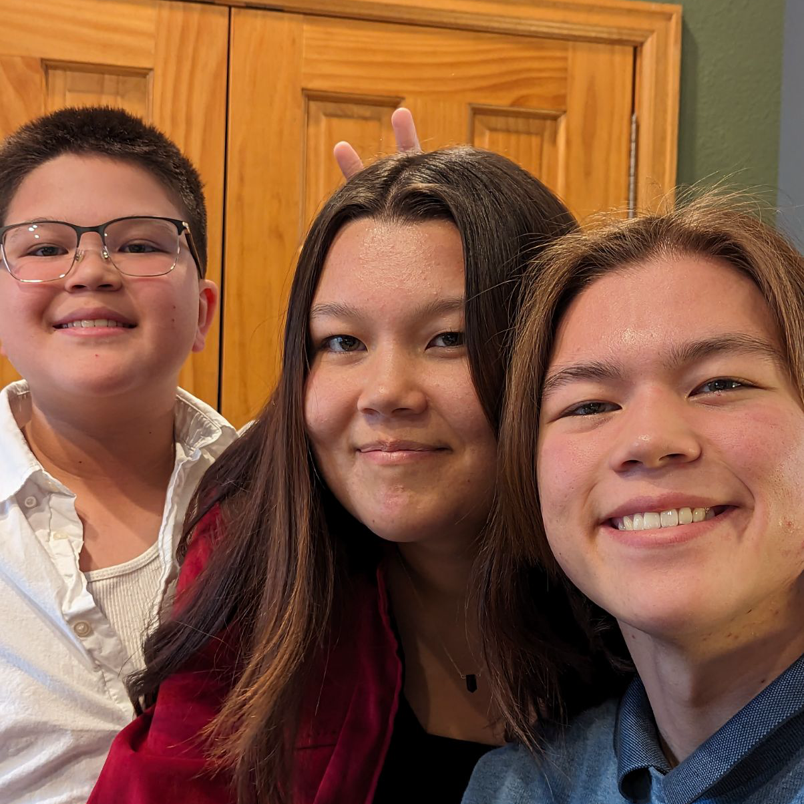
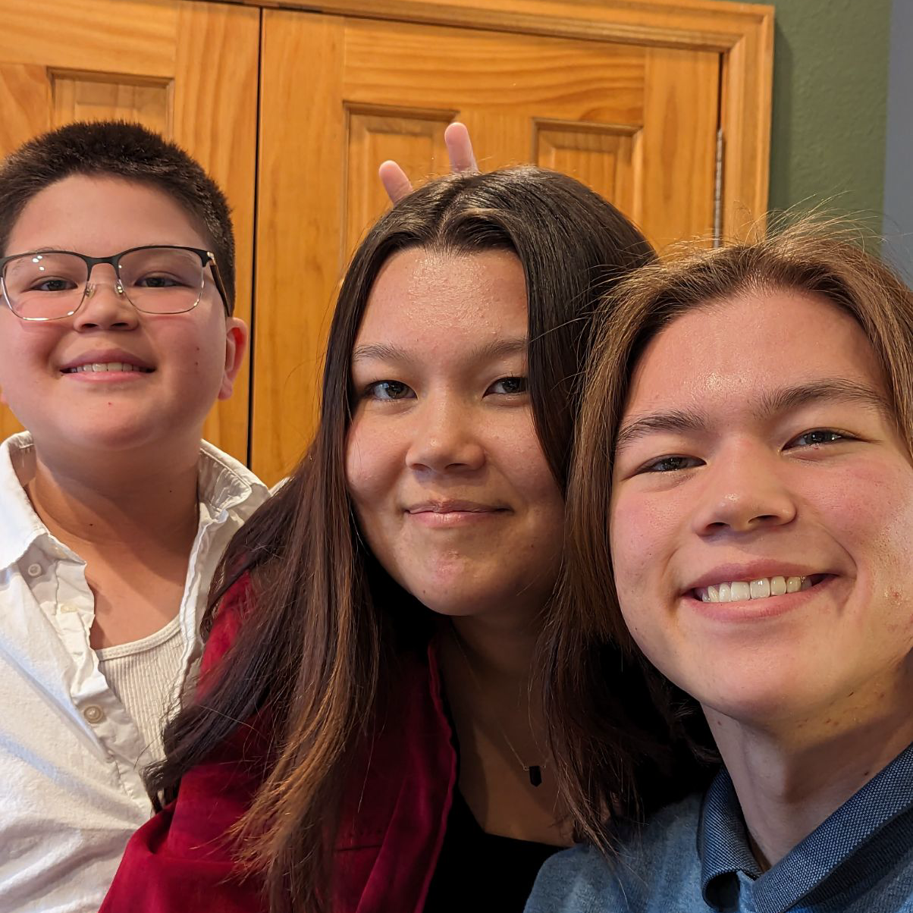

On a more personal level...

I'm a real human being, I promise! (Not just a walking, talking CV). I'm from Denver, Colorado and have been living here for over 15 years. As a new grad, I'm very excited to get out into the world, get my hands dirty, and try new things! My current favorite hobbies are singing, learning to play instruments, and writing music. I'm an ameteur bassist and guitarist (electric preferred!), with plans to learn drums soon. I also enjoy writing, art, dance, and fashion-- any form of creative expression, really! I'm admittedly not very good at most of them, but I love them anyway. : ) When I'm looking to relax, I can be found hiking, walking my dog Luna, playing with tarot cards, hanging out with friends and family, reading, journaling, meditating, and/or fueling my boba addiction. Colorado is pretty incredible, but Luna and I are looking forward to moving somewhere cool and exploring (sniffing)!
Some Favorites of Mine
- Favorite quote: "Be so good they can't ignore you" -Steve Martin (I really appreciate this quote because, in the words of a close friend of mine, "It feels like lighting a fire under your [butt]".)
- Favorite music genre: Alternative rock (Classic with a twist-- can't go wrong.)
- Favorite TV show (currently): Dickinson (It's a little funky, but very fun!)
- Favorite/lucky number: 9 (Such a good number.)
- Favorite coding language: Swift (Controversial, I know! I'm very biased. A close second is Python, although I'm not sure if that's better or worse.)
Photo Gallery


 
